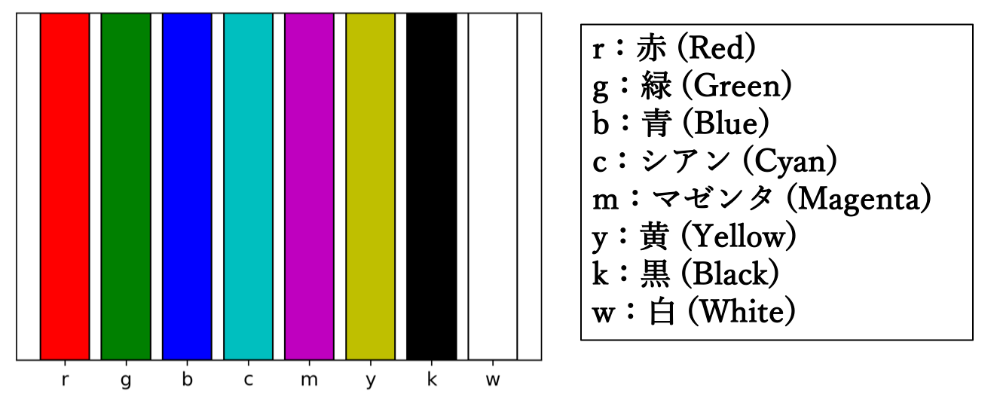
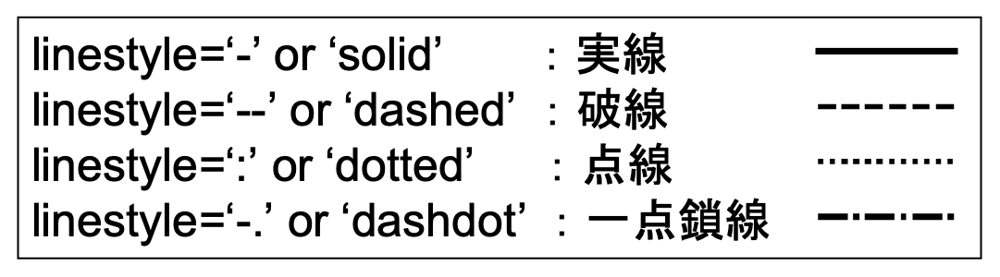
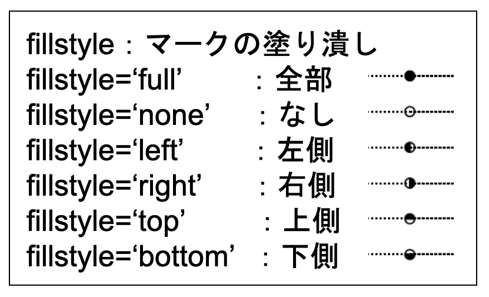
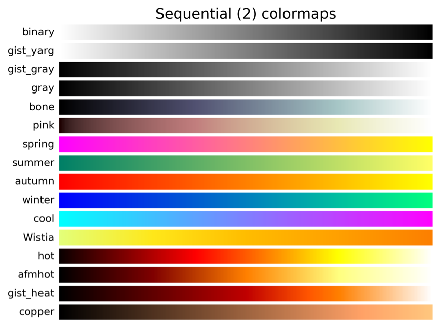
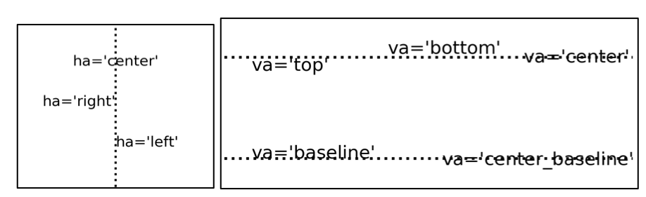

色の名前
- 主要な色の名前 
- 指定可能な色の名前一覧

線種
- 指定可能な線種一覧 
マーカー
- 指定可能なマーカーの一覧

マーカーの塗り潰しパターン
- 指定可能なマーカーの塗り潰しパターン一覧 
文字のサイズと太さ
- 文字列で指定する場合
- 数字で指定する場合

fontweightは細かく指定しても反映されない
fontsize=整数、fontweight=整数（0〜1000）
エラーバーの書式
- error_kwに渡すことができるcapsizeとecolorオプション
ハッチのパターン
- ハッチのパターン一覧
色テーブル
- 色テーブルの一覧 
矢羽の各部分の名称
- 矢羽の各部分の名称とデフォルトのスタイル
- 矢羽の表示を変える
emptybarb=0.15, spacing=0.12, height=0.4, width=0.25
左：emptybarb=0.05, spacing=0.24, height=0.8, width=0.25
右：width=0.50と旗矢羽の幅を倍にした
矢印の始点の位置
- 矢印の始点の位置指定
矢印の各部分の名称
- 矢印の各部分の名称とデフォルトのスタイル
矢印の頭の幅
- 矢印の頭の幅を変えた場合の見た目
矢印の頭の長さ
- 矢印の頭の長さを変えた場合の見た目
箱ひげ図
- デフォルトの箱ひげ図
箱ひげ図の各部分と設定
- patch_artistを使った箱ひげ図の各部分と設定を変更する例 左：patch_artistを使った場合のデフォルトのスタイルに各部分の名称を加えた
右：設定を変更した場合（横に記述したオプション使用。必ずしも見た目良く変更してはいません）
凡例の位置
- 凡例の位置指定の一覧

文字列の位置
- 文字列の水平位置と鉛直位置を指定する 
プロット範囲の調整
- pyplot.subplots_adjustで使用可能なオプション一覧
- pyplot.subplots_adjustのオプションに対応するもの
[top]